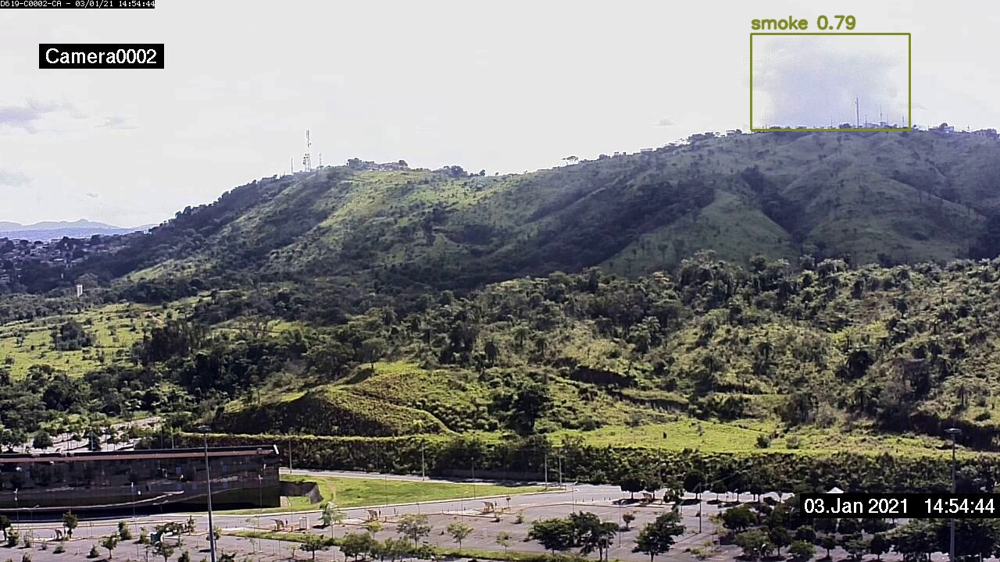
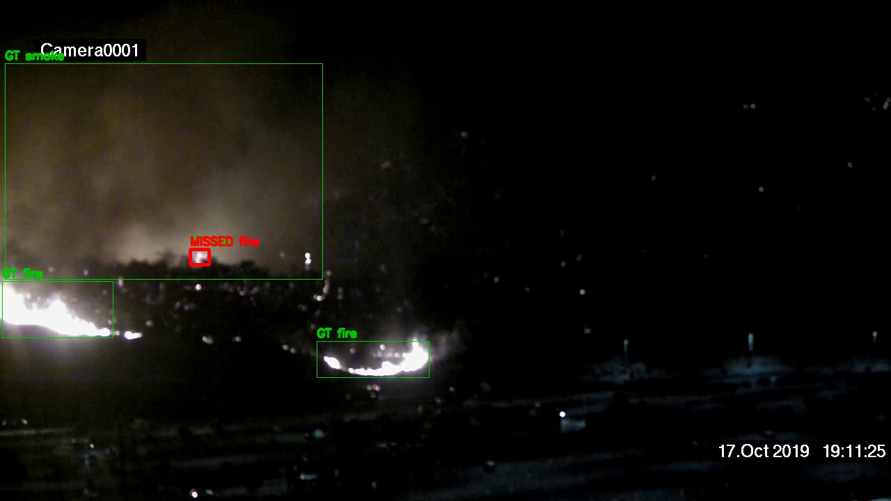
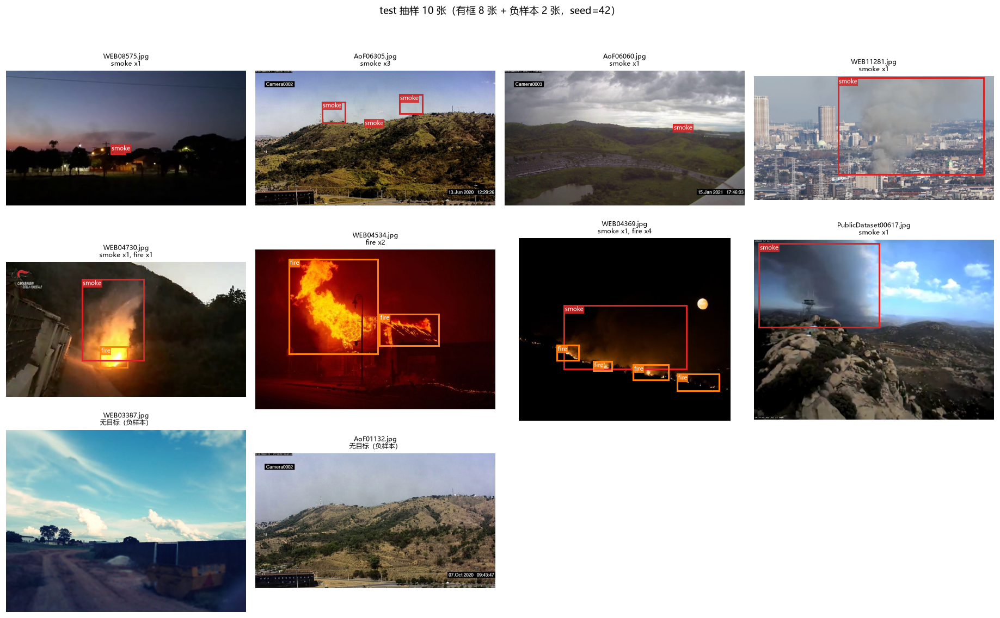
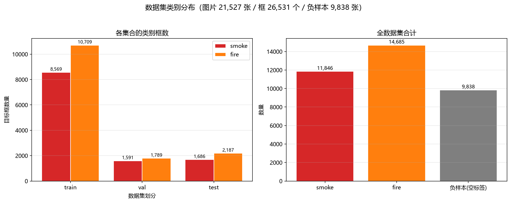
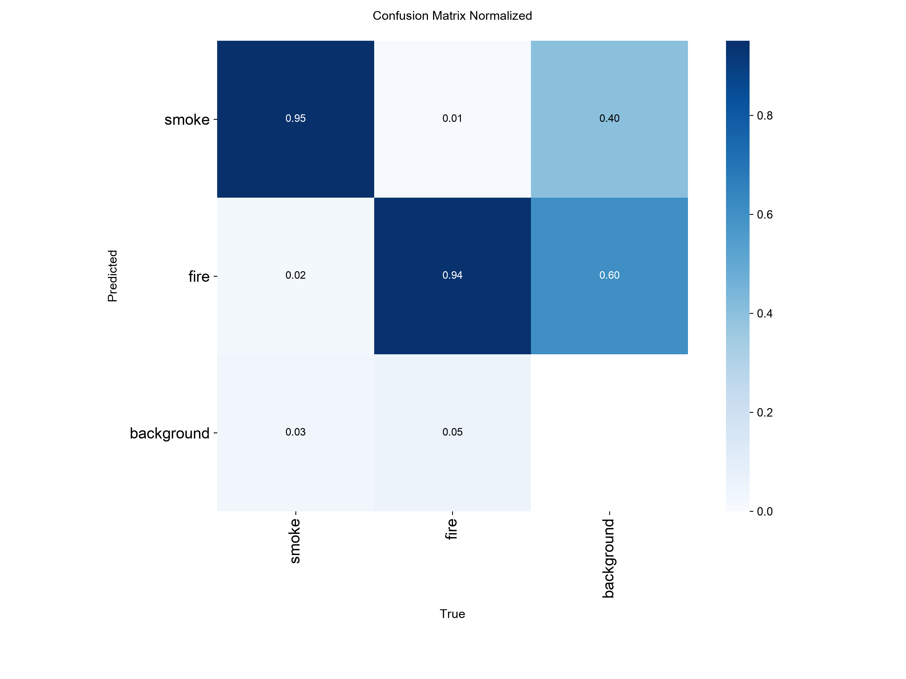
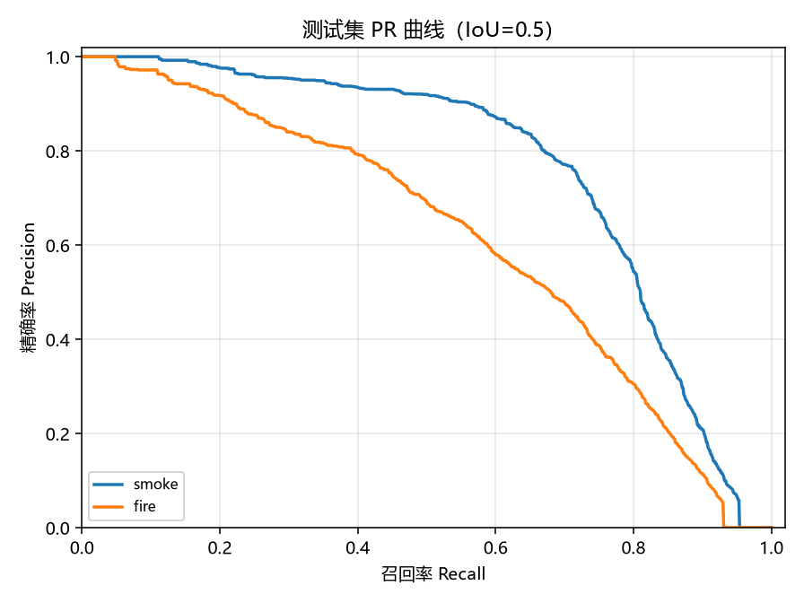
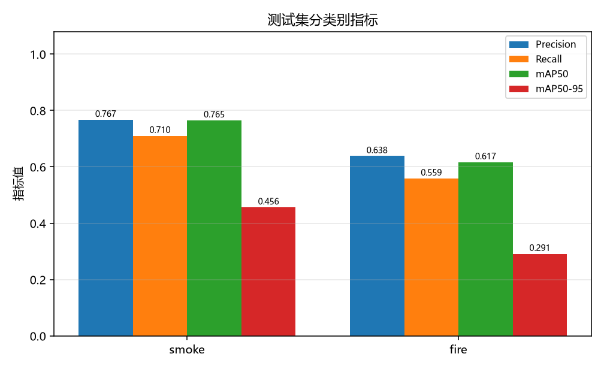
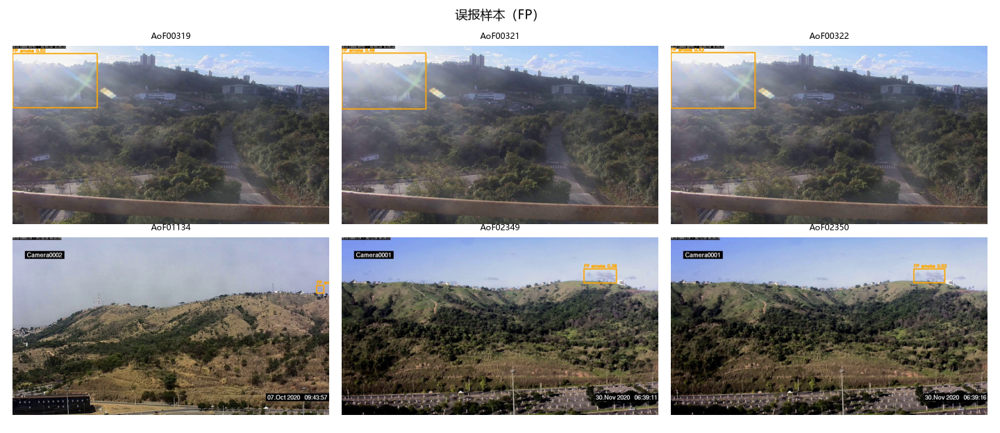
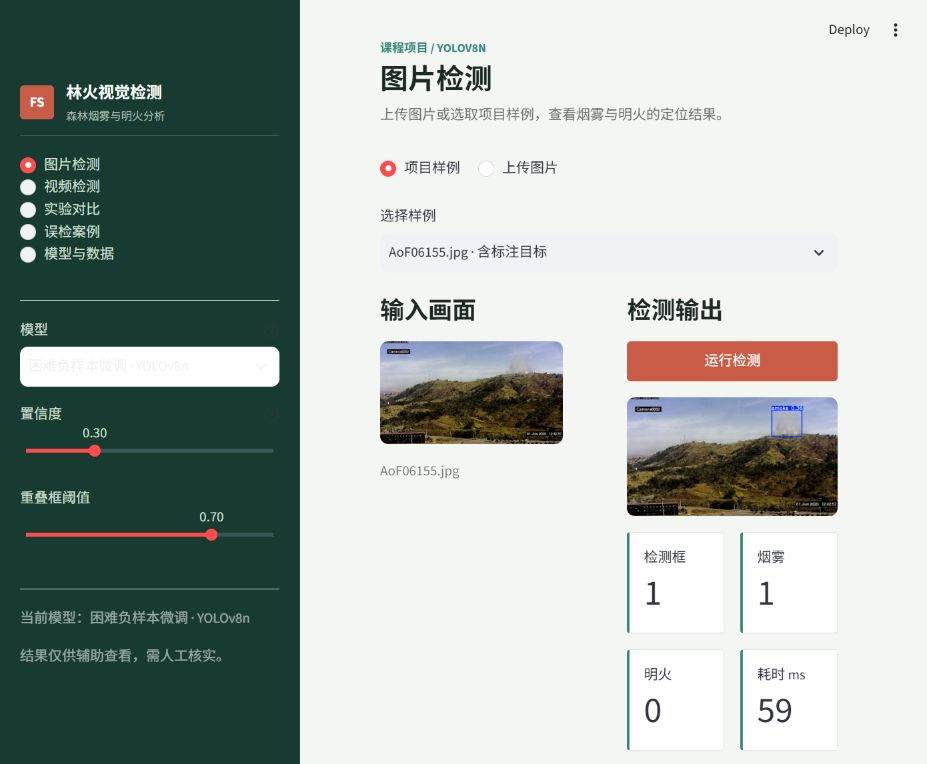

最简单的查看方式：本页是离线网页，不需要 Python、VS Code、Streamlit 或网络。双击本文件即可查看项目成果。
提示：
提示：
http://localhost:8501 只在启动它的那台电脑上有效，不是可发送给别人的公共网址。
核心结果
0.6909
测试集 mAP@0.5
0.3738
测试集 mAP@0.5:0.95
0.7027
Precision
5.41%
空标签测试图误报率（89/1645）
项目概况
数据与模型
YOLOv8nsmokefire
测试集 3,229 张图片、3,878 个目标框。训练集、验证集、测试集约按 70% / 15% / 15% 划分；数据是 D-Fire 野外/林区为主的公开数据，不是纯森林数据集。
实验设置
最终模型累计 40 轮困难负样本微调，输入尺寸 640，batch=8，使用 RTX 3060 Laptop 6GB 和 AMP。验证集标定置信度阈值为 0.30。
实验对比
| 模型 | 轮数 | mAP@0.5 | mAP@0.5:0.95 | Precision | Recall | 空标签图误报率 |
|---|---|---|---|---|---|---|
| 10 轮基线 | 10 | 0.6007 | 0.3140 | 0.6288 | 0.5558 | 8.15% |
| 30 轮基线 | 30 | 0.6543 | 0.3536 | 0.6614 | 0.5918 | 8.81% |
| 困难负样本首轮微调 | 10 | 0.6791 | 0.3708 | 0.6758 | 0.6274 | 4.62% |
| 困难负样本微调 | 40 | 0.6909 | 0.3738 | 0.7027 | 0.6346 | 5.41% |
误检与漏检案例
误报高亮结构被识别为烟雾

空标签测试图中，模型在高亮、低纹理区域输出 smoke 框，置信度约 0.786。
漏检夜间小火点未正确匹配

低照度和小目标共同降低定位稳定性；图中同时保留真实标注和漏检框。
真实图表






系统与文件
系统截图

系统支持图片检测、视频逐帧检测、模型对比和误检案例查看。该截图来自实际运行页面。
如果需要运行交互式检测系统
静态查看页不需要安装任何东西。只有要运行图片/视频检测时，才需要在项目目录建立 Python 环境并安装 README 中的依赖。安装完成后运行：
venv\Scripts\python.exe -m streamlit run app.py
然后只在运行系统的那台电脑上访问 http://localhost:8501。其他电脑不能直接访问这个地址。
项目局限
数据集包含野外、城市和工业等场景；原始视频编号缺失，划分采用感知哈希近似分组；视频系统逐帧检测，没有时序建模；模型输出只能作为课程演示和人工辅助查看，不能作为真实火灾报警依据。